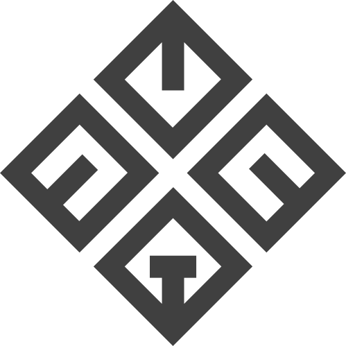
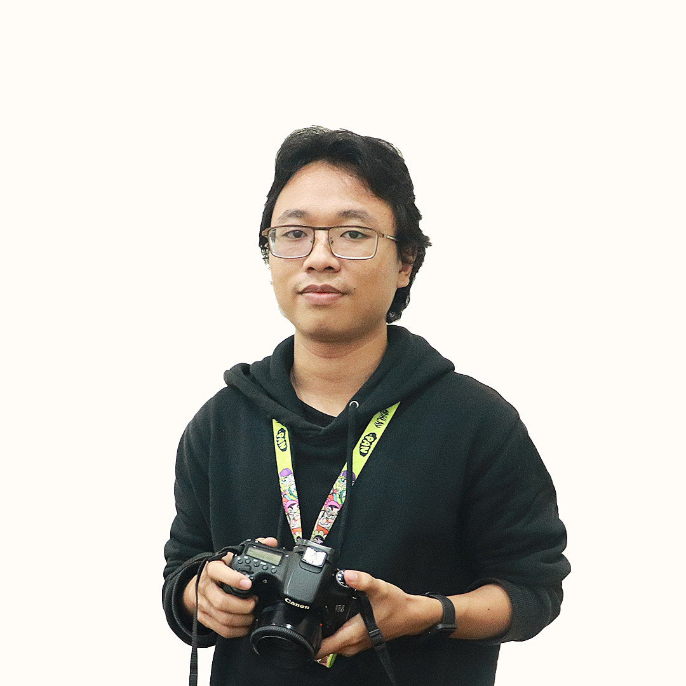

Bachelor of Software Engineering
Telkom University
ProgramS1 Rekayasa Perangkat Lunak
Graduated2026
GPA3.85 / 4.00

Software Engineer / Jakarta, Indonesia
A fresh Software Engineering graduate building JavaScript-based web products, Flutter applications, and practical delivery workflows for real-world business and operational needs.

I build software for practical contexts, including MSME projects and monitoring applications connected to IoT, agriculture, and industrial workflows.
My strongest focus is JavaScript-based web development, with experience across framework-based and native web approaches. I also build with Flutter, and I enjoy the operational side of software: Docker, CI/CD, Linux servers, Nginx, Grafana, and Azure.
Bachelor of Software Engineering
ProgramS1 Rekayasa Perangkat Lunak
Graduated2026
GPA3.85 / 4.00
Vocational School / Software Engineering
ProgramRekayasa Perangkat Lunak
Graduated2022
Framework-based and native web applications, from user interfaces and APIs to data flows and maintainable product structure.
Cross-platform mobile experiences with Flutter and Dart, with working familiarity in Kotlin-based Android development.
Docker, CI/CD, Linux, Nginx, Grafana, and Azure-based deployment workflows for software that needs to run reliably.
Project 01 / IoT monitoring
A JavaScript-based IoT log-monitoring project focused on viewing and managing operational data from a web interface.
Project 02 / MSME platform
A project focused on practical digital support for MSME and cooperative workflows. Add the final project details and outcomes here when ready.
Project 03 / DevOps
A DevOps study project focused on JavaScript services, CI/CD practices, and the workflow required to move software toward deployment.
Project 04 / Private e-commerce
A private Next.js and TypeScript storefront for a Wonosobo custom motorcycle decal workshop, with a browsable catalog, motor selector, and custom-order experience.
Have a project in mind?